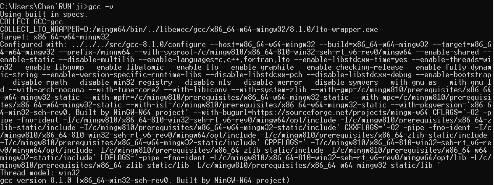
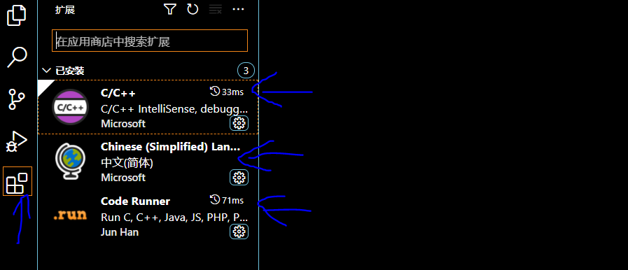
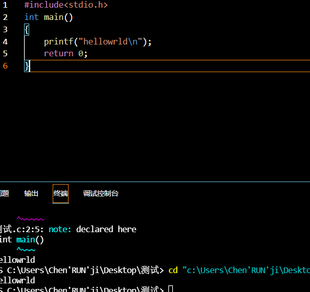
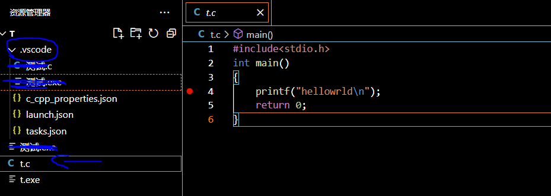

VScode环境配置
最近发现dev c++喜欢报一些奇奇怪怪的错，所以这里将阵地转移到了Vscode，看看网上吹的是不是都是真的，记录一下配置的过程
准备
- vscode这个软件
- Windows下的这个gcc
开始
下载编译器：
先下载gcc，安装，将其中的bin目录的地址给到path路径下，然后将include的路径也给到path

然后打开dos窗口输入【gcc -v】出现

这些东西就说明安装好了
配置VScode：
打开vscode
1.首先在插件商店安装汉化插件，C语言插件，运行插件

这样就完成了基本的配置，重启一下软件让他们生效
2.然后开始配置以些文件
先进入一个文件夹，这里我新创建了一个
按快捷键Ctrl+Shift+P调出命令面板，输入”C/C++“，选择“Edit Configurations(UI)”进入配置。这里配置两个选项： - 编译器路径：D:/……/bin/gcc.exe【填写你自己的路径】
- 然后划到这一页最下面，找到###Sense模式，选则gcc-x64
这时可以看到文件夹内生成了一个.vscode文件夹，里面有c_cpp_properties.json文件，打开之后会发现有自己的gcc.exe的目录，如果那个目录不是，需要人为改正
2.创建一个tasks.json文件来告诉VS Code如何构建（编译）程序。该任务将调用gcc编译器基于源代码创建可执行文件。 按快捷键Ctrl+Shift+P调出命令面板，输入tasks，选择“Tasks:Configure Default Build Task”：
再选“C/C++: g++.exe build active file”（可能前面的不一样，后面的几个英文对了就可以）
这时就会出现tasks.json文件，打开文件，看一下路径是否正确，不对就自己改改
3.配置调试文件GDB: 这里主要是为了在.vscode文件夹中产生一个launch.json文件，用来配置调试的相关信息。点击菜单栏的Debug—>Start Debugging：
选择C++(GDB/LLDB)
这时可以看到生成了一个launch.json文件，这个文件就是关于调试用的
这里我采用了网上大神的代码，全部替换
1 | { |
在终端运行：
这样是为了防止code run插件出现乱码
- 选择 文件 -> 首选项 -> 设置，打开 VS Code 设置页面，
- 找到 Run Code configuration，勾上 Run In Terminal 选项。
- 设置之后，代码就会在 Terminal 中运行即可。
这时该文件夹就已经写好了，现在任意位置创建一个C语言文件，看能不能像dev一样方便
测试
在桌面新建了一个C文件，这里直接用vscode打开，写好程序
先保存，不然会出错
写完之后“Ctrl+Alt+N”开始运行
每一次debug完事都要保存

这是没问题的，现在来开始调试一下
需要注意的是这里的路径和文件名不能又中文，否则会调试失败
将.vscode文件和需要调试的文件放在同一个目录下，然后用vscode打开这个目录，就可以调试了

这时就基本完成了